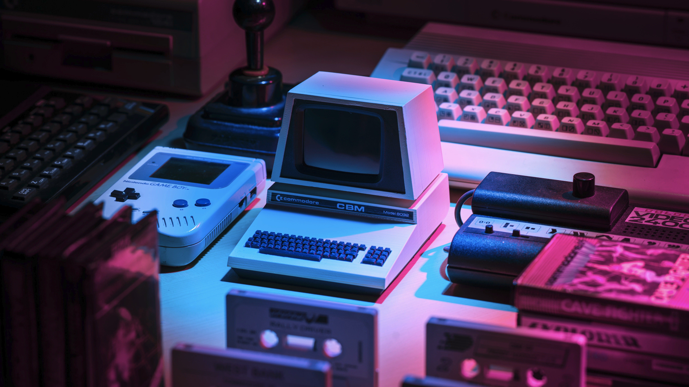

Persoonlijke projecten
Hier zijn enkele Persoonlijke projecten waar ik in mijn vrije tijd aan werk.
-

Shrimp the Discord bot
This is my very first programming project that I started around the end of 2018. Since then I've moved from Javascript to Typescript and had multiple versions with each one improving on the previous one.
-

Homelab
Dit is een collectie van computers die ik rond 2020 heb aangekocht, deze dienen nu als mijn eigen server(s). Ik kan hier allerlei services/programma's op runnen die bestaande betaalde software kunnen vervangen. Enkele services die hierop runnen zijn: Pi-hole , Truenas scale , Immich
-

project 3
Project is nog onder constructie 🔨👷‍♂️
-
project 4
Project is nog onder constructie 🔨👷‍♂️
-
project 5
Project is nog onder constructie 🔨👷‍♂️
-
project 6
Project is nog onder constructie 🔨👷‍♂️